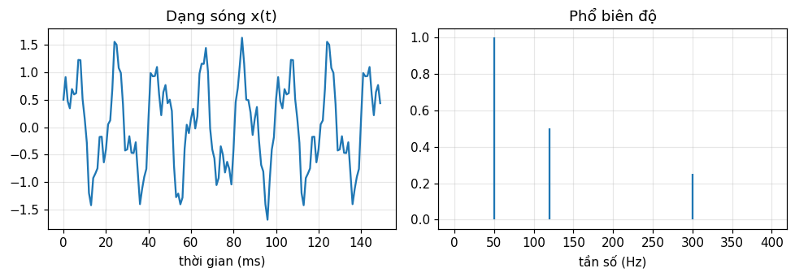
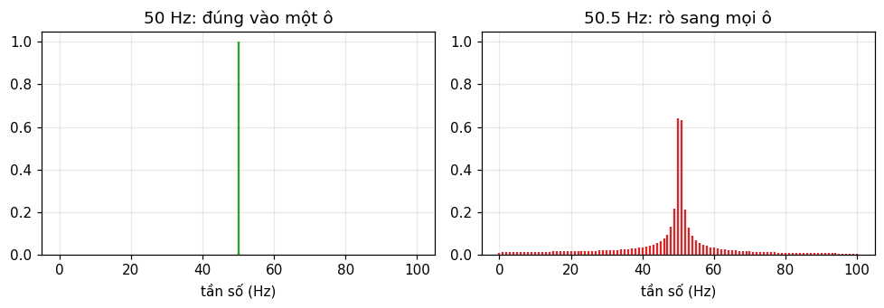
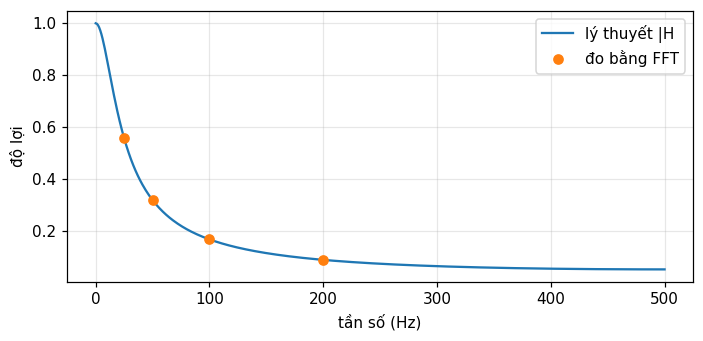
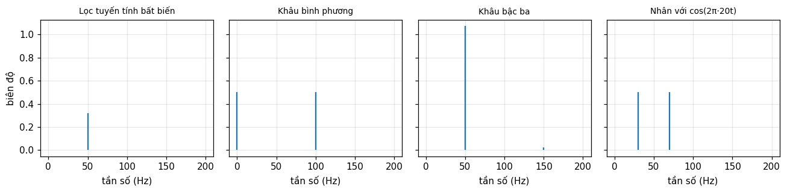
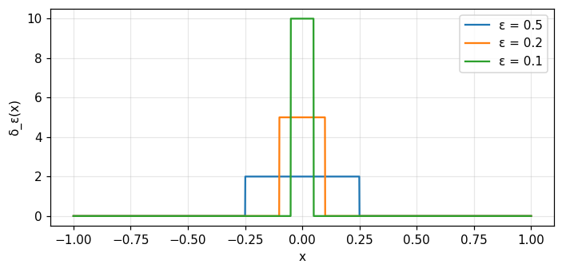

Giải thích được ý tưởng "đổi miền rồi giải" của mọi phép biến đổi tuyến tính.
Nêu hai điều kiện (tuyến tính, bất biến theo thời gian) để sóng điều hòa vào cho sóng điều hòa cùng tần số ra.
Đọc phổ từ FFT, biết rò phổ và pha, và kiểm tra bằng phép tính trực tiếp.
Nhận ra ký hiệu \Pi, \delta, \text{III} và dấu * mà cả giáo trình sẽ dùng.
Biết hai giáo trình gốc của khóa (Bracewell và Barkat) gặp nhau ở đâu.
Dùng nút, chấm tròn hoặc phím ← → để chuyển slide.
PHẦN 1/5
01
Biến đổi là công cụ giải bài toán tuyến tính
Bối cảnh: Bạn quen giải bài toán tuyến tính trực tiếp trong miền thời gian hoặc không gian.
Vướng mắc: Khi hệ có "trí nhớ" hoặc tín hiệu phức tạp, phép giải trực tiếp nhanh chóng rối.
Giải pháp: Đổi sang miền biến đổi, giải ở đó, rồi đổi ngược về.
Ba bước: biến đổi, giải, biến đổi ngược
Ví dụ số: tích chập thành phép nhân
Vì sao Fourier đứng trước Laplace và chuỗi Fourier
1/5 · Biến đổi là công cụ giải bài toán tuyến tính
Đổi miền, giải, rồi đổi ngược
Bracewell mở đầu: các phép biến đổi tuyến tính mang tên Fourier và Laplace là kỹ thuật giải bài toán trong hệ tuyến tính. Ta dùng phép biến đổi như một công cụ toán học hoặc vật lý để đổi bài toán thành một bài toán giải được (tr. 1).
Biến đổi bài toán sang miền tần số.
Giải ở đó, thường chỉ cần nhân và chia.
Biến đổi ngược để lấy đáp án trong miền gốc.
1/5 · Biến đổi là công cụ giải bài toán tuyến tính
f(x)hàm gốc theo biến x (thời gian hoặc không gian)
F(s)biến đổi Fourier, hàm của tần số s
stần số: số chu kỳ trên một đơn vị của x
1/5 · Biến đổi là công cụ giải bài toán tuyến tính
Ví dụ số: tích chập thành phép nhân
Tích chập nối tiếp ("serial product") của \{2,2,3,3,4\} và \{1,1,2\} được Bracewell tính tay ở tr. 32. Notebook tính bằng hai cách: tổng trực tiếp và nhân hai FFT rồi biến đổi ngược. Cả hai cho dãy 2 4 9 10 13 10 8.
Kiểm tra nhanh
Tổng các số hạng của tích chập bằng tích hai tổng: 14 nhân 4 bằng 56.
1/5 · Biến đổi là công cụ giải bài toán tuyến tính
Fourier đi trước Laplace
Đi qua Fourier trước, nên khi Laplace tổng quát hơn xuất hiện ở chương sau, nhiều tính chất đã quen. Ta chỉ còn phải chú ý câu hỏi mới và thiết yếu: dải hội tụ trên mặt phẳng phức (tr. 1).
Trong khóa này
Module 17 quay lại Laplace. Khi đó bạn học thêm đúng một ý mới thay vì học lại cả bộ tính chất.
1/5 · Biến đổi là công cụ giải bài toán tuyến tính
Một định lý, nhiều hóa thân
Bracewell nhận xét rằng cùng một khái niệm hay xuất hiện dưới dạng khác ở lĩnh vực khác: nguyên lý kính hiển vi tương phản pha gợi nhớ mạch tách điều tần, và cả hai được giải thích bằng cùng cách dùng biến đổi. Một bài toán thống kê có thể giải bằng cách quen thuộc từ các tầng khuếch đại nối tiếp (tr. 1).
Đây cũng là lý do khóa này ghép Bracewell với Barkat: cùng một tích chập xuất hiện trong lọc tín hiệu và trong phân phối của tổng các biến ngẫu nhiên.
1/5 · Biến đổi là công cụ giải bài toán tuyến tính
Đảo thứ tự truyền thống
Trong các giáo trình cổ điển, biến đổi Fourier thường xuất hiện ở bài giảng cuối của một khóa dài về chuỗi Fourier. Nếu đảo thứ tự, chuỗi Fourier trở thành trường hợp cực đoan trong khuôn khổ biến đổi Fourier, và khó khăn toán học của chuỗi gắn với tính cực đoan phi vật lý của nó (tr. 2).
Module 13 sẽ dựng lại chuỗi Fourier từ nhân với chuỗi xung \text{III}.
1/5 · Biến đổi là công cụ giải bài toán tuyến tính
Hai đại lượng mang cùng thông tin: bảo toàn năng lượng
Với một tín hiệu mẫu 1000 điểm, tổng bình phương theo thời gian là 123.1328 và \frac1N\sum|X_k|^2 theo tần số là 123.1328. Hai số bằng nhau (định lý Rayleigh, module 6).
1/5 · Biến đổi là công cụ giải bài toán tuyến tính
Tự kiểm tra phần 1
Vì sao tổng các số hạng của tích chập bằng tích hai tổng? (Gợi ý: đặt s=0 trong biến đổi của tích chập.)
Nếu một tín hiệu có năng lượng theo thời gian là 123.1328, năng lượng theo tần số phải là bao nhiêu?
Vì sao Bracewell nói chuỗi Fourier là trường hợp "cực đoan"?
Đáp án gợi ý: F(0)=\int f, nên biến đổi của tích chập tại s=0 bằng F(0)G(0); đáp án hai bằng đúng 123.1328; đáp án ba: vì tuần hoàn vô hạn không có biến đổi thường (module 2).
PHẦN 2/5
02
Dạng sóng và phổ
Bối cảnh: Ta nhìn dạng sóng trên máy hiện sóng và nghe âm thanh bằng tai.
Vướng mắc: "Phổ" có phải chỉ là một đại lượng toán học trừu tượng không?
Giải pháp: Dạng sóng và phổ là biến đổi Fourier của nhau, đều đo được, và đọc phổ đòi hỏi vài quy ước cần nắm.
Ba sóng hình sin và phổ của chúng
Hai cách tính phổ, độ phân giải và rò phổ
Pha, đơn vị tần số và tính tuyến tính của phổ
2/5 · Dạng sóng và phổ
Ba sóng hình sin: đọc phổ từ FFT
Tín hiệu mẫu gồm 1.0 tại 50 Hz, 0.5 tại 120 Hz và 0.25 tại 300 Hz. FFT phục hồi các biên độ 1, 0.5 và 0.25.

Hình 1. Dạng sóng (trái) trông phức tạp, nhưng phổ (phải) chỉ có ba vạch đúng tại 50, 120 và 300 Hz.
2/5 · Dạng sóng và phổ
Phổ là thứ đo được, không chỉ là công thức
Máy hiện sóng cho ta thấy dạng sóng điện, máy phân tích phổ cho ta thấy phổ điện hoặc phổ quang, và tai người nghe được phổ (Bracewell, tr. 1).
Dạng sóng: x(t), đo bằng máy hiện sóng.
Phổ: X(f), đo bằng máy phân tích phổ hoặc bằng tai.
Hai đại lượng là biến đổi Fourier của nhau, nên mang cùng lượng thông tin.
2/5 · Dạng sóng và phổ
Hai cách tính phổ cho cùng đáp số
Cách A dùng FFT. Cách B cộng trực tiếp theo định nghĩa X_k=\sum_n x_ne^{-i2\pi kn/N} ("biến đổi Fourier chậm" của Bracewell, chương 7). Chúng lệch nhau tối đa 2.4e-14, tức là trùng tới sai số làm tròn.
Quan sát 1 giây với tần số lấy mẫu 1000 Hz cho 1000 mẫu và các ô tần số cách nhau f_s/N=1 Hz. Muốn tách hai vạch cách nhau 0.5 Hz phải quan sát ít nhất 2 giây.
Khoảng cách ô tần số
\Delta f=\frac{f_s}{N}=\frac{1}{T}
Tthời gian quan sát
f_stần số lấy mẫu
2/5 · Dạng sóng và phổ
Rò phổ: khi tần số rơi giữa hai ô
Sóng 50.5 Hz phân tích trong 1 giây không rơi đúng vào ô nào. Biên độ tại ô 50 chỉ còn 0.6397 (thay vì 1), dự đoán |\text{sinc}(0.5)| là 0.6366, và ngay cả tại ô 80 vẫn còn 0.0085.

Hình 2. Cùng một sóng hình sin biên độ 1: nếu tần số rơi đúng vào ô (trái) ta thấy một vạch, nếu rơi giữa hai ô (phải) năng lượng loang sang các ô lân cận.
2/5 · Dạng sóng và phổ
Pha: sin và cos khác nhau ở đâu
Phổ biên độ không phân biệt \sin và \cos; pha mới phân biệt. FFT cho pha -90 độ tại ô 50 của \sin và 0 độ tại ô 120 của \cos.
Liên hệ pha
\sin(2\pi f t)\leftrightarrow -90^\circ,\qquad \cos(2\pi f t)\leftrightarrow 0^\circ
2/5 · Dạng sóng và phổ
Tần số s là chu kỳ trên đơn vị, không phải rad/s
Giáo trình giữ 2\pi trong số mũ nên s là số chu kỳ trên một đơn vị của x (tr. 6, 18). Nếu bạn đọc tài liệu khác dùng \omega thì đổi bằng \omega=2\pi s.
Biến đổi Fourier là tuyến tính: \mathcal F\{x_1+x_2\}=\mathcal F\{x_1\}+\mathcal F\{x_2\}. Notebook kiểm tra với hai tín hiệu, sai lệch lớn nhất là 6.2e-14, cỡ sai số làm tròn.
Đừng nhầm
Tuyến tính của phép biến đổi khác với tuyến tính của một hệ. Phần 3 sẽ tách hai khái niệm này.
PHẦN 3/5
03
Tuyến tính, bất biến và tích chập
Bối cảnh: Bộ khuếch đại được mô tả bằng đáp ứng tần số, và sóng hình sin vào thường cho sóng hình sin ra.
Vướng mắc: Điều đó đúng khi nào, và khi nào sai?
Giải pháp: Đúng khi hệ tuyến tính và bất biến; khi đó đáp ứng liên hệ với kích thích bằng tích chập.
Hai điều kiện và bộ lọc thử nghiệm
Đáp ứng xung, đáp ứng tần số
Phi tuyến, thay đổi theo thời gian và méo hài
3/5 · Tuyến tính, bất biến và tích chập
Đáp ứng điều hòa với kích thích điều hòa
Đáp ứng của một hệ với sóng điều hòa vẫn là điều hòa, cùng tần số, với hai điều kiện: tuyến tính và bất biến theo thời gian (Bracewell, tr. 3). Vì vậy ta mô tả bộ khuếch đại bằng đáp ứng tần số.
3/5 · Tuyến tính, bất biến và tích chập
Gộp hai điều kiện thành một: tích chập
Hai điều kiện có thể phát biểu thành một: đáp ứng liên hệ với kích thích bằng tích chập (tr. 3).
Bộ lọc y[n]=a\,y[n-1]+(1-a)\,x[n] với a=0.9 có đáp ứng xung h[n]=(1-a)a^n. Tích chập trực tiếp với h và hàm lfilter cho cùng đáp số (lệch tối đa 8.2e-15), và tổng của h là 1, tức độ lợi một chiều bằng 1.
3/5 · Tuyến tính, bất biến và tích chập
Thử với sóng 50 Hz
Đầu vào 50 Hz, lấy mẫu 1000 Hz. Tần số ra là 50 Hz. Độ lợi đo được 0.3193, theo lý thuyết 0.3193. Pha đo được -62.62 độ, theo lý thuyết -62.62 độ (dấu âm nghĩa là sóng ra trễ).
Đo bằng FFT tại 25, 50, 100 và 200 Hz: độ lợi lần lượt 0.5576, 0.3193, 0.1681 và 0.0893, khớp đường lý thuyết. Bộ lọc thông thấp: tần số càng cao, biên độ càng giảm.

Hình 3. Đường lý thuyết của bộ lọc thông thấp và bốn điểm đo bằng FFT (25, 50, 100, 200 Hz) nằm trên cùng một đường.
3/5 · Tuyến tính, bất biến và tích chập
Khi điều kiện bị phá vỡ, tần số mới xuất hiện
Sóng 50 Hz qua khâu bình phương (phi tuyến): thành phần một chiều 0.5, thành phần 100 Hz biên độ 0.5, còn 50 Hz chỉ 0. Nhân với \cos(2\pi\,20t) (tuyến tính nhưng thay đổi theo thời gian): hai thành phần 30 Hz và 70 Hz biên độ 0.5 và 0.5.

Hình 4. Cùng sóng vào 50 Hz: hệ tuyến tính bất biến giữ vạch 50 Hz; khâu bình phương tạo 0 và 100 Hz; khâu bậc ba tạo hài 150 Hz; bộ nhân tạo 30 và 70 Hz.
3/5 · Tuyến tính, bất biến và tích chập
Méo hài của một khuếch đại có số hạng bậc ba
Khâu y=x+0.1x^3 cho sóng 50 Hz: thành phần cơ bản 1.075 và hài bậc ba tại 150 Hz là 0.025. Hệ số méo hài \text{THD}=A_3/A_1 là 2.33%.
Chỉ tuyến tính chưa đủ: bộ nhân \cos(2\pi\,20t) tuyến tính nhưng thay đổi theo thời gian, nên tạo tần số mới.
Bất biến theo thời gian đôi khi còn đúng khi tuyến tính hỏng, còn bất biến theo không gian không phổ biến: độ võng cầu không được tách thành hình sin theo không gian (tr. 3).
Khi tính tuyến tính hỏng (servo phi tuyến), phải xem lại việc phân tích thành thành phần điều hòa (tr. 3).
PHẦN 4/5
04
Ký hiệu và hàm suy rộng
Bối cảnh: Các hàm như xung chữ nhật thường phải định nghĩa từng khúc, rất cồng kềnh.
Vướng mắc: Hàm xung \delta(x) không phải hàm thông thường nhưng vẫn rất hữu ích.
Giải pháp: Dùng ký hiệu gọn và coi biểu thức chứa xung là giới hạn của dãy xung có bề rộng.
Bốn ký hiệu cốt lõi và cách dùng
Xung là giới hạn: bảng số
Hàm suy rộng và chương 5 đến 6
4/5 · Ký hiệu và hàm suy rộng
Bốn ký hiệu dùng xuyên suốt
Ký hiệu
Tên
Vai trò
\Pi(x)
xung chữ nhật ("hàm cổng")
nhân vào dạng sóng để cắt lấy một đoạn
\delta(x)
ký hiệu xung
đáp ứng xung, tải điểm, điện tích điểm
\text{III}(x)
chuỗi xung ("shah")
lấy mẫu đều và hàm tuần hoàn
f*g
tích chập
thay tích phân có biến giả bằng một ký hiệu gọn
4/5 · Ký hiệu và hàm suy rộng
Xung chữ nhật là "hàm cổng"
Xung chữ nhật đơn giản không kém xung Gauss, nên Bracewell đặt tên riêng \Pi(x). Tên "hàm cổng" của ngành điện tử gợi ý cách dùng: nhân \Pi(t) vào dạng sóng để mở van cho một đoạn đi qua (tr. 2).
Ví dụ: tích phân \int\Pi(x)\cos(\pi x)\,dx bằng 0.6366, đúng 2/\pi.
4/5 · Ký hiệu và hàm suy rộng
Ký hiệu * thay cho tích phân có biến giả
Viết \Pi*f hay \Pi(x)*f(x) thay cho \int_{x-1/2}^{x+1/2}f(u)\,du chỉ là bước nhỏ, nhưng biến giả và cận biến mất, và bản chất "trung bình trượt" hiện ra (tr. 3). Với f(u)=e^{-u^2} tại x=0: tích phân số cho 0.9226, công thức \sqrt\pi\,\text{erf}(1/2) cho 0.9226.
4/5 · Ký hiệu và hàm suy rộng
Xung là giới hạn, không phải một hàm
Từ "ký hiệu xung" nhắc rằng \delta(x) không phải hàm. Biểu thức chứa nó có nghĩa như giới hạn của dãy xung (không phải xung nhọn) hẹp dần và cao dần, và giới hạn thường tồn tại (tr. 4).
Với f=\cos x, tích phân \int f\,\delta_\varepsilon\,dx tiến dần tới f(0)=1 khi \varepsilon giảm:
\varepsilon
\int f\,\delta_\varepsilon\,dx
0.5
0.9896
0.1
0.9996
0.01
1
Đây là tính chất "sàng" (sifting) mà chương 5 phát triển.

Hình 5. Dãy xung chữ nhật diện tích 1: bề rộng ε giảm thì chiều cao 1/ε tăng. Giới hạn của dãy là xung δ.
4/5 · Ký hiệu và hàm suy rộng
Vì sao gọi là "ký hiệu" xung
Trong vật lý, hàm Green và đáp ứng xung thường tạo ra hoặc quan sát được, trong giới hạn phân giải của thiết bị đo, còn xung thật thì hư cấu. Ví dụ quen thuộc là mô men do một khối điểm đặt trên dầm, hay điện trường của điện tích điểm (tr. 4).
4/5 · Ký hiệu và hàm suy rộng
Chuỗi xung \text{III} (shah): lấy mẫu và tuần hoàn
Shah được định nghĩa là \text{III}(x)=\sum_n\delta(x-n). Lấy mẫu đều (tra bảng) tương đương nhân với shah, còn hàm tuần hoàn biểu diễn được bằng tích chập với shah. Vì shah là biến đổi Fourier của chính nó, nó hữu ích gấp đôi mong đợi (tr. 2 đến 3).
Bracewell chọn cách trình bày bằng "hàm suy rộng" theo Temple và Lighthill (chương 5 và 6). Nhờ đó ta giữ được cả tính chặt chẽ lẫn cách thao tác trực tiếp với \delta vốn rất hiệu quả (tr. 4).
Trong khóa này
Module 5 xây dựng \delta và \text{III} chi tiết. Barkat cũng dùng hàm bước và xung ở mục 1.3.1 để viết mật độ xác suất của biến ngẫu nhiên rời rạc (module 10).
PHẦN 5/5
05
Bản đồ hai giáo trình và cách làm việc bằng số
Bối cảnh: Bạn sắp đi qua 26 module lấy từ hai giáo trình có mục tiêu khác nhau.
Vướng mắc: Không có bản đồ thì rất dễ lạc, và "biến đổi" dễ bị hiểu nhầm là luôn phải tính số.
Giải pháp: Có lộ trình theo phần A đến E, biết chỗ hai sách gặp nhau, và một quy trình kiểm số cố định.
Bracewell và Barkat: hai giáo trình gốc
Năm phần A đến E
Tư duy biến đổi khác với tính biến đổi
Quy trình kiểm số của khóa
5/5 · Bản đồ hai giáo trình và cách làm việc bằng số
Hai giáo trình gốc
Bracewell
Barkat
Tên
The Fourier Transform and Its Applications
Signal Detection and Estimation
Chương nội dung
19
12
Trọng tâm
biến đổi, tích chập, lấy mẫu, phổ
xác suất, quá trình ngẫu nhiên, phát hiện, ước lượng
Ngôn ngữ chính
hàm tất định
biến và quá trình ngẫu nhiên
5/5 · Bản đồ hai giáo trình và cách làm việc bằng số
Mỗi chương là một module. Bốn cặp chương có cùng chủ đề được ghép làm một module dài hơn (khoảng 60 slide thay vì 40):
Module
Bracewell
Barkat
Chủ đề chung
10
16
1
xác suất qua hàm đặc trưng
12
17
3
quá trình ngẫu nhiên, nhiễu, phổ công suất
13
10
8
lấy mẫu, chuỗi Fourier, khai triển trực giao
14
11
4
DFT/FFT và quá trình rời rạc
5/5 · Bản đồ hai giáo trình và cách làm việc bằng số
Năm phần A đến E
Phần
Module
Nội dung
A
1 – 9
nền tảng Fourier: tích chập, xung, các định lý, bộ lọc
B
10 – 12
xác suất, phân phối, quá trình ngẫu nhiên và nhiễu
C
13 – 17
lấy mẫu, DFT/FFT, Hartley, họ hàng Fourier, Laplace
D
18 – 20
ăng-ten và quang học, khuếch tán, phổ động
E
21 – 26
quyết định thống kê, ước lượng, lọc, phát hiện, CFAR
5/5 · Bản đồ hai giáo trình và cách làm việc bằng số
Tư duy biến đổi khác với tính biến đổi
Phương pháp biến đổi không nhất thiết đòi tính biến đổi bằng số. Một số phương pháp tốt nhất cho bài toán tuyến tính không áp dụng biến đổi lên dữ liệu, nhưng cơ sở của chúng được làm sáng tỏ nhờ miền biến đổi (tr. 3).
Với tính số, ta thường thích đáp án hiện ra dưới dạng tích chập của hai hàm hơn là một biến đổi Fourier (tr. 3). Đó là lý do module 3 đứng ngay trước bộ định lý.
5/5 · Bản đồ hai giáo trình và cách làm việc bằng số
Quy trình kiểm số của khóa: hai phương pháp độc lập
Mọi con số trên trang được notebook in ra, không gõ tay.
Mỗi số được tính bằng ít nhất hai phương pháp độc lập (ví dụ FFT và tổng trực tiếp, tích phân số và công thức đóng), và notebook dừng nếu chúng lệch nhau.
Bản tiếng Việt và tiếng Anh dùng cùng mã, và phải in ra đúng cùng các số.
Ví dụ ngay trong module này: FFT và tổng trực tiếp lệch 2.4e-14; bộ lọc tích chập và lfilter lệch 8.2e-15.
5/5 · Bản đồ hai giáo trình và cách làm việc bằng số
Cách học một module
Đọc mục tiêu và duyệt các slide theo 5 phần. Dùng danh sách chọn slide để nhảy.
Đọc mục lịch sử, case study và bảng công thức.
Mở notebook, chạy từng cell, đọc phần "Đầu ra thật" sau mỗi cell rồi tự đổi tham số.
Làm quiz, đọc giải thích các câu sai, quay lại slide tương ứng.
5/5 · Bản đồ hai giáo trình và cách làm việc bằng số
Bảng ký hiệu và quy ước của giáo trình
Ký hiệu
Ý nghĩa
x,\ s
biến gốc và biến tần số (chu kỳ trên đơn vị)
f(x)\supset F(s)
cặp biến đổi Fourier
\Pi,\ \Lambda
xung chữ nhật, xung tam giác
H(x),\ \text{sgn}\,x
hàm bậc thang đơn vị, hàm dấu
\text{sinc}\,x
\sin(\pi x)/(\pi x)
\delta,\ \text{III}
xung, chuỗi xung (shah)
*
tích chập
5/5 · Bản đồ hai giáo trình và cách làm việc bằng số
Tự kiểm tra phần 5
Chương nào của Bracewell và Barkat được ghép để dạy về quá trình ngẫu nhiên và nhiễu?
Vì sao "tư duy biến đổi" không có nghĩa là luôn phải tính FFT?
Nếu FFT và tổng trực tiếp lệch nhau nhiều, bạn làm gì trước khi tin con số?
Gợi ý: chương 17 và chương 3; vì đôi khi đáp án ra thẳng dạng tích chập; điều tra nguyên nhân tới cùng.
TỔNG KẾT
Điều cần mang theo
Biến đổi là công cụ: đổi miền, giải, đổi ngược.
Dạng sóng và phổ mang cùng thông tin (bảo toàn năng lượng), và cả hai đo được.
Đọc phổ cần chú ý độ phân giải f_s/N, rò phổ và pha.
Sóng điều hòa vào cho sóng điều hòa ra cùng tần số khi hệ tuyến tính và bất biến; khi đó đáp ứng là một tích chập.
\delta(x) là giới hạn của dãy xung, không phải hàm thông thường.
Khóa có 26 module, ghép hai giáo trình, và mọi số liệu đều được kiểm bằng hai phương pháp.
📜 Bối cảnh lý thuyết & lịch sử
Joseph Fourier sinh ngày 21/3/1768 và mất ngày 16/5/1830 (trang đầu sách). Lord Kelvin viết rằng định lý Fourier không chỉ là một trong những kết quả đẹp nhất của giải tích hiện đại mà còn là công cụ không thể thiếu khi xử lý hầu như mọi vấn đề sâu của vật lý hiện đại (lời đề từ của Bracewell).
Ronald Bracewell là giáo sư kỹ thuật điện tại Stanford, người thiết kế kính thiên văn vô tuyến và dùng phân tích Fourier trong cả thiết kế thiết bị lẫn xử lý dữ liệu, kể cả chụp cắt lớp (phần giới thiệu tác giả). Vì vậy giáo trình đặt trọng tâm vào diễn giải vật lý.
Bracewell cũng cho biết cuốn sách khởi đầu như một bộ tranh minh họa các cặp biến đổi, rồi phần bình luận nhanh chóng vượt về giá trị (tr. 2). Bạn sẽ dùng bộ tranh đó (chương 22) ở nhiều module sau.
🔎 Case study thực tế
Bộ khuếch đại bị méo. Bộ khuếch đại lý tưởng là hệ tuyến tính: sóng 50 Hz vào thì chỉ có sóng 50 Hz ra. Nếu một tầng có đặc tính bình phương (mô hình đơn giản của méo phi tuyến), phổ ngõ ra có thành phần một chiều 0.5 và hài bậc hai 100 Hz biên độ 0.5, còn thành phần gốc 50 Hz gần như biến mất (0). Với tầng có số hạng bậc ba y=x+0.1x^3, phổ có hài bậc ba 0.025 và THD 2.33%. Chỉ cần nhìn phổ là biết hệ đã phi tuyến, không cần biết mạch bên trong.
Đây là cách kỹ sư đo méo: đưa vào sóng hình sin sạch, đọc phổ ra, và mọi vạch phổ ngoài tần số vào là dấu hiệu của phi tuyến hoặc của hệ thay đổi theo thời gian.
Notebook tự sinh dữ liệu bằng mã, không cần tải file ngoài. Mọi con số trên trang này được in ra từ notebook và đối chiếu bằng hai phương pháp độc lập.
⚠️ Những bẫy diễn giải sai
"\sin t, bước nhảy và xung đều có biến đổi Fourier."
Nói chặt chẽ thì cả ba không có: tích phân Fourier không hội tụ với mọi s (tr. 8). Về mặt vật lý chúng không thể tạo ra và ta dùng chúng như xấp xỉ gọn. Module 2 xử lý bằng "biến đổi trong giới hạn".
"Chỉ cần hệ tuyến tính là sóng hình sin vào cho sóng hình sin ra."
Cần cả bất biến theo thời gian. Bộ nhân với \cos(2\pi\,20t) là tuyến tính nhưng thay đổi theo thời gian, và biến sóng 50 Hz thành hai thành phần 0.5 tại 30 Hz và 0.5 tại 70 Hz.
"Biên độ tại ô FFT luôn bằng biên độ sóng."
Chỉ đúng khi tần số rơi đúng vào một ô. Sóng 50.5 Hz cho 0.6397 thay vì 1, và phổ rò tới cả những ô xa.
"Phân tích thành hài hòa luôn dùng được cho mọi hệ vật lý."
Khi tính tuyến tính hỏng, như trong servo phi tuyến, phải xem lại việc tách thành thành phần điều hòa. Bất biến theo không gian cũng không phổ biến, vì thế độ võng của cầu không được nghiên cứu bằng cách tách tải thành thành phần hình sin theo không gian (tr. 3).
✅ Quiz tự kiểm tra
Bấm một đáp án để chấm ngay và xem giải thích. Kết quả không được lưu.
Nguồn tham khảo
R. N. Bracewell, The Fourier Transform and Its Applications, 3rd ed., McGraw-Hill, 2000, chương 1 (tr. 1 đến 4), chương 2 (tr. 5 đến 8), chương 3 (tr. 24, 30 đến 34) và lời đề từ.
M. Barkat, Signal Detection and Estimation, 2nd ed., Artech House, 2005, mục 1.3.1 (hàm bước và xung) và mục lục chương 1 đến 12.
Nội dung được viết với sự hỗ trợ của AI (Claude), rồi được kiểm lại. Mọi con số do notebook Jupyter tính ra và đối chiếu bằng hai phương pháp độc lập; số trang trích dẫn lấy từ văn bản OCR của hai giáo trình gốc. Vẫn có thể còn sai sót, mong bạn báo lại.